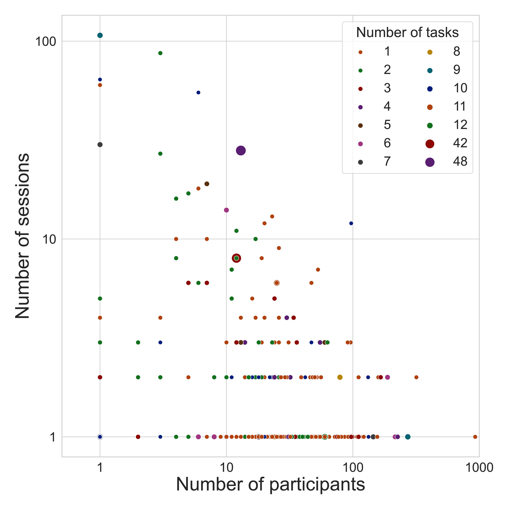
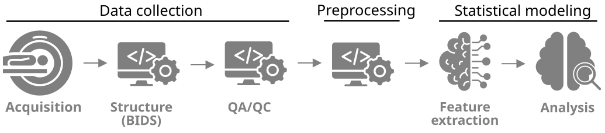

name: title layout: true class: cover title-slide --- count: false counter: false .boxed-content[ .pull-left.center[ <img src="../remark/assets/ohbm2026-logo.png" width="130%" /> ] .pull-right.center[ <br /> <br /> <br /> <br /> <br /> # Compute Once, Reuse Forever ## Sustainable Science with NiPreps *Christopher J. Markiewicz* ] ] ??? --- name: nofooter layout: true .perma-sidebar[ <p class="rotate"> <a rel="license" href="http://creativecommons.org/licenses/by/4.0/"><img alt="Creative Commons License" style="border-width:0; height: 20px; padding-top: 6px;" src="https://i.creativecommons.org/l/by/4.0/88x31.png" /></a> <span style="padding-left: 10px; font-weight: 600;">OHBM Educational — NiPreps (June 14<sup>th</sup>, 2026)</span> </p> ] --- name: footer-nobar template: nofooter layout: true .footer[ .footer-logo-row[ <img src="../remark/assets/ohbm2026-footer.png" height="25px" /> ] ] --- name: footer template: nofooter layout: true .footer[ .footer-logo-row[ <img src="../remark/assets/ohbm2026-footer.png" height="25px" /> ] .footer-bar[] ] --- .section-mark[ ## OHBM 2026 DISCLOSURES I have no conflicts of interest in relation to this presentation to disclose. ] --- exclude: true counter: false .section-mark.center[ # Open data ] --- # Open data can be big or small .pull-left[ Consortium datasets are characterized by large numbers of subjects: | Dataset | Subjects | Sessions | Tasks | |-------|----------|----------|-------| | UK Biobank | 67k | 1-2 | 2 | | ABCD | 11.8k | 1 | 5 | | HCP-YA | 1.2k | 1 | 8 | | ABIDE (I+II) | 2.2k | 1 | 1 | | ... | These datasets generally collect limited data per-subject. ] -- .pull-right[ There is a "long tail" of datasets with smaller numbers of subjects (N<50), but more tasks and deeper phenotyping: <figure> <p></p> <figcaption>Markiewicz et al. (2021) Fig 3 - Summary of datasets in OpenNeuro</figcaption> </figure> ] ??? We heard in the NeuroBagel talk about discovering datasets to address new questions. But how do we actually use these datasets together? --- # Heterogeneous datasets introduce analytical challenges .pull-left[ <object type="image/svg+xml" data="../assets/reproducible-definition-grid.svg" style="width: 100%"></object> .small[ *The Turing Way project* illustration by Scriberia. Used under a CC-BY 4.0 licence. doi:<a href="https://doi.org/10.5281/zenodo.3332807">10.5281/zenodo.3332807</a>.] ] -- .pull-right.larger[ Variation arises from differences in: - Subjects / states - Recording hardware/software - Preprocessing choices - Preprocessing implementations - Analytical choices Especially pronounced when combining across datasets. ] --- # Standardized, robust preprocessing is a targeted solution .center.small[ <p></p> [Esteban et al., (2020)](http://doi.org/10.1038/s41596-020-0327-3); [Niso et al., (2022)](https://doi.org/10.1016/j.neuroimage.2022.119623) ] -- .larger[ <i class="fa-solid fa-circle-check"></i> Data collection is **done**. You've selected your datasets and filtered your subjects. ] -- .larger[ <i class="fa-solid fa-circle-xmark"></i> Statistical modeling is full of **necessary** choices. ] -- .larger[ <i class="fa-solid fa-circle-right"></i> Preprocessing is an **opportunity** to control flexibility and harmonize the data. It should be: ] * **Robust**: Work on a wide variety of inputs without failing. * **Standardized**: It applies the same logic to every dataset. * **Transparent**: Fully inspectable and reproducible. ??? --- # fMRIPrep is robust, standardized, and minimal .boxed-content.center[ <object type="image/svg+xml" data="../assets/fmriprep-natmeth-fig01-inkscape.svg" style="width: 75%;"></object> ] ??? A few years ago, we introduced fMRIPrep, a minimal, robust, and standardized preprocessing pipeline for fMRI. --- count:false class: stepwise-svg # fMRIPrep is robust, standardized, and minimal .boxed-content.center[ <object type="image/svg+xml" data="../assets/fmriprep-natmeth-fig01-inkscape.svg" style="width: 75%;"></object> ] ??? What do I mean by that? The pipeline is robust in that it has minimal requirements (T1w and BOLD images), but adaptive in that it can utilize additional scans when available (e.g. fieldmaps, T2w images, additional echos). And it's standardized in the sense that it accepts BIDS formatted datasets, makes processing decisions based on the discovered metadata, and produces outputs in standardized formats for further processing. It is minimal in that it is agnostic to downstream analysis, so it refrains from spatial smoothing or temporal filtering. Natural divisions in workflow: * Structural * Functional * ... --- count:false # fMRIPrep is robust, standardized, and minimal .boxed-content.center[ <object type="image/svg+xml" data="https://www.nipreps.org/identity/fmriprep/fmriprep-21.0.0-inkscape.svg" style="width: 95%; padding-top: 15pt"></object> ] ??? Natural divisions in workflow: * Structural * Functional * Fieldmap * Template selection Diffusion, ASL: Reuse all but functional PET: Reuse structural, templates --- # NiPreps is an ecosystem of preprocessing workflows .pull-left.center[ <object type="image/svg+xml" data="https://www.nipreps.org/identity/nipreps-general/nipreps-chart.svg" style="width: 100%; padding-top: 10%;"></object> ] .pull-right.larger[ Building off the success of fMRIPrep, NiPreps are: * **BIDS first** — query datasets and adapt * **Minimal** — stop where consensus stops, emit analysis-agnostic derivatives * **Self-reporting** — visual reports, citation boilerplate ] -- .pull-right.larger[ The NiPreps follow a "**glass-box**" design philosophy. Users are expected and empowered to understand the processing that is done. ] --- exclude: true # NiPreps design principles * Input: BIDS-formatted data. * Process: Intelligently adapts to available data (e.g., uses field maps if present, but doesn't fail if not). This robust design is key to handling heterogeneity. * Output: BIDS Derivatives including: 1. Intuitive visual QC reports. 1. Analysis-agnostic derivatives (confounds, brain masks). 1. Reusable, pre-computed transformations. (This sets the stage for the next slide). --- # Visual reports reflect the stages and quality of processing .boxed-content[ .small[https://fmriprep.s3.amazonaws.com/bootcamp-geneva-2024/sub-15.html] <iframe src="https://fmriprep.s3.amazonaws.com/bootcamp-geneva-2024/sub-15.html" width="100%" height="500px" style="border: 0" /> ] --- # There's a missing division... .boxed-content.center[ <object type="image/svg+xml" data="https://www.nipreps.org/identity/fmriprep/fmriprep-21.0.0-inkscape.svg" style="width: 95%; padding-top: 15pt"></object> ] ??? --- # Fit+transform isolates expensive or probabilistic work .boxed-content.center[ <object type="image/svg+xml" data="../assets/fmriprep-fit-transform-inkscape.svg" style="width: 100%; padding-top: 20pt"></object> ] ??? * Concept: We separate expensive computation from flexible application. * FIT (Compute-Heavy): Run once. Example: Calculating the complex nonlinear registration from a subject's T1w to a template. This is slow and difficult. The result is a set of warp files. * TRANSFORM (Lightweight): Run as needed. Example: Using that warp to resample a BOLD file into the template space. This is fast and easy. * Key Message: NiPreps does the heavy "fitting" for you. You can then perform the lightweight "transform" to any space you need, on demand. --- # NiPreps and the FAIR principles * Interoperability (I): Outputs are in BIDS Derivatives format, a community standard. * Reusability (R): The "Fit+Transform" model makes derivatives radically more reusable. Instead of one giant, pre-packaged output, you get flexible components to build your desired final product. --- counter: false .section-mark.center[ # NiPreps in Practice ## Three perspectives ] --- # Perspective: Dataset creators * Goal: Maximize impact. * Action: Run fMRIPrep. Share raw BIDS data + the minimal "fit" derivatives (warps, confounds, reports). * Their job ends here. They have produced a highly valuable, reusable, and compact asset. --- # Perspective: Secondary analyst * Goal: Use that shared data for a new analysis. * The Question: How do we actually use these minimal derivatives? What does it look like to perform the "transform" step ourselves? --- # Perspective: Secondary analyst - Demo --- # Perspective: Secondary analyst - Wrap-up * The Problem: How did I know that my Python environment had the right version of nitransforms? How do we run that fmriprep command from Part 1? * The Answer: Environment management (lock-files, containers) --- # Perspective: Data archivist * Goal: Balance cost and value. * The Takeaway: "Having seen how powerful and flexible the minimal 'fit' derivatives are, the archivist's choice is clear. Storing these small warp files instead of huge, pre-resampled 4D images is a massive win for storage costs, transfer bandwidth, and long-term reusability." --- # Compute Once, Reuse Forever * Our live demo is sustainability in action. We avoided re-running the expensive "fit" step. * Store Smart, Not Big: The archivist saves energy on storage and transfer by holding the minimal derivatives. * NiPreps standardizes preprocessing for heterogeneous data. * The "Fit+Transform" design is the key to this, separating expensive computation from flexible application. * This model is practical (as we just saw!), promotes FAIR principles, and enables a more sustainable research lifecycle. --- template: title .center.middle.black[   ]